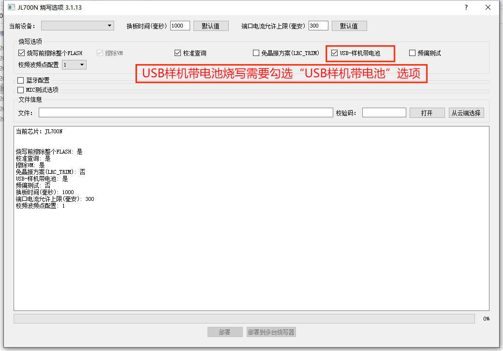

2.14. 样机带电池烧录
2.14.1. 应用场景
组装好的成品有二次升级固件的需求，成品预留USB升级接口，升级的量较大需提高升级效率，这时可考虑使用一拖八烧录器对带电池的成品进行固件升级。
Note
1.空片不能用带电池升级;
2.带电池烧录，带电池烧录负载消耗的电流过大，烧录器最大只能容忍1.5A电流，如需样机带电池烧录，请通过“控制USB电源的钮子开关”断开烧录USB端口供电（样机电池电压需正常，电压过低请充足电再升级）；
3.没有断开烧录USB端口供电样机时，同时烧录数量务必保持在4个以内，不然烧坏烧录器，损失自己承担;
2.14.2. 带电池烧录使用说明
样机带电池烧录功能，目前一拖八烧录器支持【样机带电池】和【USB-样机带电池】升级两种方式，支持情况以PC部署界面情况为准。
Note
比如AC700N和JL700N芯片型号的【USB-样机带电池】进入升级，SDK需要开启PC功能，是否能进行带电池烧录需要sdk提供者确认。 usb带电池烧录配置参考《usb样机带电池烧录》
样机带电池烧录配置
【1】烧录器部署目标芯片fw文件程序（请参考《更新目标芯片程序到烧录器》小节）；
【2】在部署时需要在烧录配置项中勾选“样机带电池”，部署目标芯片程序到烧录器后，烧录器才支持带电池烧录功能，如样机带电池烧录配置所示。；

样机带电池烧录配置
样机带电池烧录
样机带电池烧录，跟普通的样机芯片程序烧录流程基本一致。
【1】带电池样机需要正常运行SDK；
【2】烧录器上电开机后，如果样机电池电压正常，请通过“控制USB电源的钮子开关”断开烧录USB端口供电;
【3】带电池的样机通过USB线接入烧录器USB烧录接口，按按键让样机复位即可进行烧录;
烧录成功后拔出USB线即固件升级完毕。样机固件升级成功后，对样机执行开机操作即可实现开机。
Note
如果样机没有设置专门的按键去复位样机，那么样机程序可以通过检查烧写器USB的DP或者DM脚信号去进行复位进入rom函数升级，或者通过USB VCC 电源检测方式触发进入升级等，当前使用计数DP时钟数触发进入升级较多，单纯使用USB_VCC接入触发样机，可能容易出现误触发。
2.14.3. usb样机带电池烧录
与上面普通的样机带电池烧录不同在于，不需要按按键让样机复位即可进行烧录。
具体操作步骤：
【1】SDK需要开启PC功能；
【2】带电池样机需要开机并正常运行SDK；
【3】烧录器部署目标芯片fw文件程序（请参考《更新目标芯片程序到烧录器》小节）；
【4】在部署时需要在烧录配置项中勾选“USB-样机带电池”，部署目标芯片程序到烧录器后，烧录器才支持带电池烧录功能，如样机带电池烧录配置所示。；
【5】部署完毕后，烧录器重新上电，烧录器上电开机后，如果样机电池电压正常，请通过“控制USB电源的钮子开关”断开烧录USB端口供电；
【6】带电池的样机通过USB线接入烧录器USB烧录接口，进入升级；
烧录成功后拔出USB线即固件升级完毕。样机固件升级成功后，对样机执行开机操作即可实现开机。

USB-样机带电池烧录配置
2.14.4. 注意事项
一拖八进行带电池的样机烧录时，因为带电池原因，样机实际消耗的电流会很大，导致一拖八烧录器USB烧录端口处的电流达到几十mA至几百mA不等。即使USB端口电路扛得住几百mA的电流，但是如果8个通道同时进行烧录，电源适配器总供电端将达到几A电流，而烧录器最大只能容忍1.5A电流，可能会导致电源适配器或烧录器烧坏。
Note
1、空片不能用带电池升级;
2、样机带电池烧录，带电池烧录负载消耗的电流过大，烧录器最大只能容忍1.5A电流，如需样机带电池烧录，请通过“控制USB电源的钮子开关”断开烧录USB端口供电（样机电池电压需正常，电压过低请充足电再升级）；否则样机同时烧录数量务必保持在4个以内，不然烧坏烧录器，损失自己承担;
2.14.5. 样机带电池升级操作调试指南
2.14.5.1. 【样机带电池】选项的作用与原理
勾选【样机带电池】：烧写器会持续发送升级命令。这样可以确保样机在短暂的复位过程中，能够及时接收到命令并成功进入升级模式，而不是复位重新运行原有的应用程序。
不勾选【样机带电池】：烧写器将接管电源控制。流程为：烧写器控制上电并发送升级命令 -> 成功则开始升级；失败则断电，随后再次上电并重试，循环此过程。
注意：如果样机实际上是带电池升级，却未勾选此选项（直接插入USB），虽然通过按键复位有一定概率进入升级模式，但识别率极低。这是因为复位时机很难刚好避开烧写器的上电或断电延时阶段。即使偶然识别成功，后续的频偏校准或芯片测试等流程也可能因电源控制冲突而失败。因此，带电池升级请务必勾选【样机带电池】。
2.14.5.2. 带电池升级的核心条件
带电池升级能否成功的关键，在于样机必须具备“复位过程”或等效的复位机制。常见的复位方式主要有以下四种：
硬件开关复位：板子上有物理开关，通过直接断开和闭合电池来实现上电复位（类似于烧写器控制断电上电）。
按键复位：通过长按或短按板子上的复位按键（Reset键）来触发重启并进入升级模式。
信号/命令复位：样机运行的SDK程序支持监测烧写器USB口DP/DM引脚的电平信号变化，或接收烧写器发送的特定命令来触发复位。
电压触发复位：样机SDK利用烧写器USB_VCC的电压变化来触发复位。此时需要在部署界面将USB_VCC配置为ON。
2.14.5.3. 未知复位方式时的排查步骤
如果您不确定当前样机支持哪种复位方式，可以按照以下步骤进行尝试和排查：
尝试物理复位（插拔电池法）：
勾选【样机带电池】，将样机USB插入烧写器。
断开烧写器的USB_VCC（或关闭端口电源分开关）。
物理断开样机电池正极，然后再重新短接（模拟上电复位）。
观察烧写器是否能识别并烧录。如果没反应，可多次重复“断开-短接”操作。
结论：如果这种方式无法进入升级，通常说明该样机不支持常规的带电池升级。
排查供电冲突：
检查样机电源是否与烧写器的USB_VCC接在一起。如果USB_VCC处于OFF状态，可能会拉低样机电压，导致供电异常。
交叉验证（断电法）：
尝试不勾选【样机带电池】，并物理断开样机电池，看是否能正常升级。
如果断电升级成功，说明烧写器与样机的升级通路正常。此时再改回勾选【样机带电池】并插拔电池，通常也能成功。
寻求技术支持：
如果上述“插拔电池”方式可行，说明升级通路没问题，关键在于确认样机在电池固定连接时如何触发复位。建议直接咨询样机的应用程序开发者或硬件电路设计者。
尝试USB私有协议升级：
如果以上方法均无效，可尝试勾选【usb样机带电池】。
此方式适用于样机插入PC时能被识别为USB设备（如音频设备、磁盘、鼠标等），且样机已开启私有协议，支持接收烧写器发送的USB升级复位命令。
使用强制升级工具：
如果上述方法均无法解决问题，可以通过强制升级工具识别样机，并使用一拖一PC上位机程序来控制升级。
2.14.5.4. 免晶振带电池升级说明
关于免晶振与带晶振芯片在带电池升级时的差异，核心在于时钟系统的初始化位置不同。这直接决定了在程序异常或Flash为空时，芯片是否还能与烧写器进行通信。具体说明如下：
1. 免晶振芯片的升级限制
对于支持免晶振带电池升级的型号（如AC632N、AC695X、AC696X、AC608N），其时钟初始化通常是在
uboot阶段进行的。因此，能否带电池升级主要取决于样机当前的应用程序是否支持。
如果在升级过程中flash uboot被擦除或者flash为空，样机在带电池状态下复位后，将无法完成时钟初始化，进而无法与烧写器建立正常的USB或串口通信，导致升级失败。
2. 带晶振芯片的升级优势
与免晶振芯片不同，带晶振芯片的时钟系统是在
maskrom内部就已经初始化正常的。这意味着，即使芯片处于空片状态或内部程序不完整，只要带电池复位，芯片依然能够正常启动底层通信 模块，
从而顺利与烧写器连接并完成升级。
总结
免晶振带电池升级的容错率较低，强依赖于
uboot的完整性；而带晶振芯片由于底层硬件（maskrom）的支持，具备更强的通信保障，不依赖于flash uboot部分，当然部分型号免晶振时也 支持在maskrom初始化时钟系统。